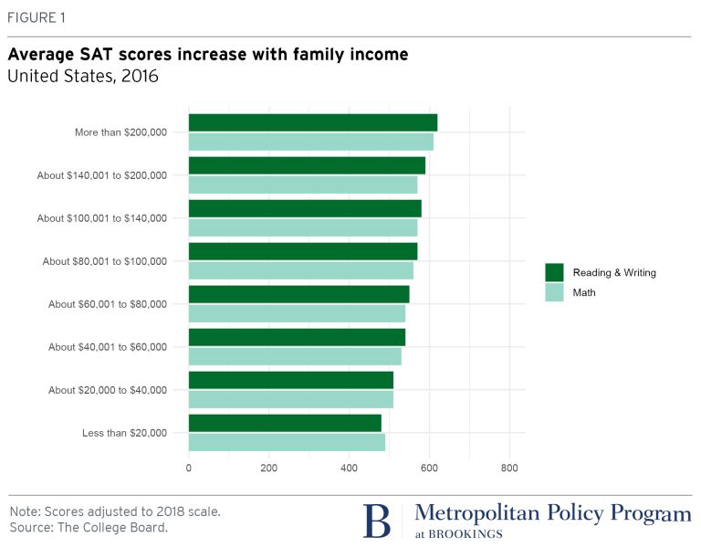
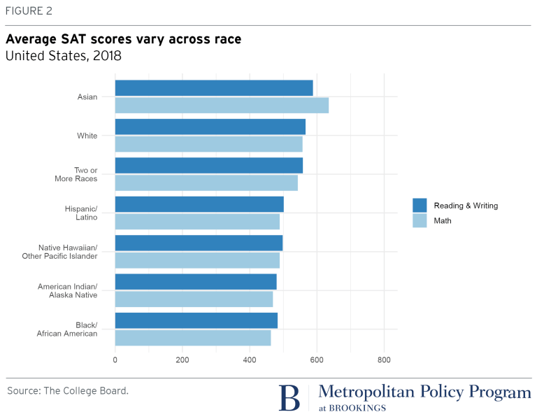

The Wealthy
While standardized tests like the SATs and the ACTs are meant to determine a student’s “college readiness”, these tests are instead economically bias, determining a student’s wealthy background rather than their intelligence. Students with family incomes less than $20k have average scores of less than 400 on each section, while families who make more than $200k average scores higher than 600 on each section[1][2]. Considering these test scores often determine a students acceptance into a college, this ultimately means that college remains exclusive to the wealthy.
These results primarily come from those who can and can’t afford giving their child a tutor for these tests. On average, a tutoring session equates to $70 an hour[3], with students usually spending multiple hours a day, and multiple days a week. Eventually, parents end up spending hundreds and thousands of dollars ensuring that their child earns a high SAT score, money that only the privileged are willing to spend.
The Racial Divide
Standardized tests don’t just discriminate against a student’s economic status; they also discriminate against their racial status and against minorities. On average, Blacks and Latinx score significantly lower than Whites and Asians, a gap that is likely caused by racism and the underfunding of schools with higher Black populations[4].
Fails to Measure Knowledge
Countless student excel in art, music, foreign languages, and many other skills that are not present on standardized tests. An exam cannot correctly measure a students intelligence by only testing certain parts of their education. A student who has a weak spot in english and math but excels in many other subjects will receive a below-average score and be perceived as below-standard, while actually being exceptionally bright[5].
TL;DR:?
Our Opinions
For us, the idea of taking a test that makes or breaks our acceptance letters puts a lot of stress on us. Each of us are taking at least one SAT this year, and some of us are taking three. While we couldn't really find a lot of studies or research conducted on this, we already know that studying for these tests is extremely time consuming, not to mention the other exams that we have to study for, the ones that directly impact our grade. And truthfully, the best way to study for this test is to take multiple practice tests, each of which require at least a three hour session in order to finish.
Fortunately for us, we're privileged enough to be able to afford one of those hundreds of dollars worth of tutors, but here's the catch; they aren't helpful. All of us have heard from multiple accounts from multiple friends that the tutors are essentially useless and a waste of time and money, that their scores have barely changed from when they took their first practice test. Honestly, we can only hope that study well enough to gain a decent score on this corrupt test.